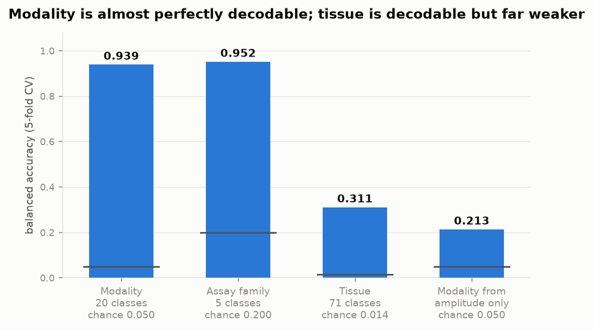
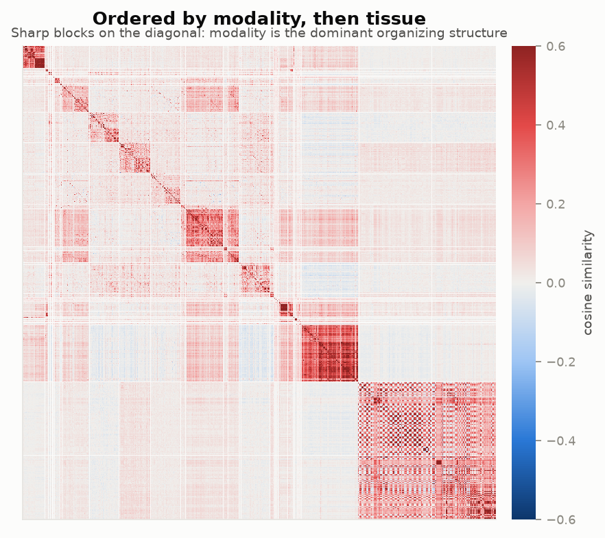
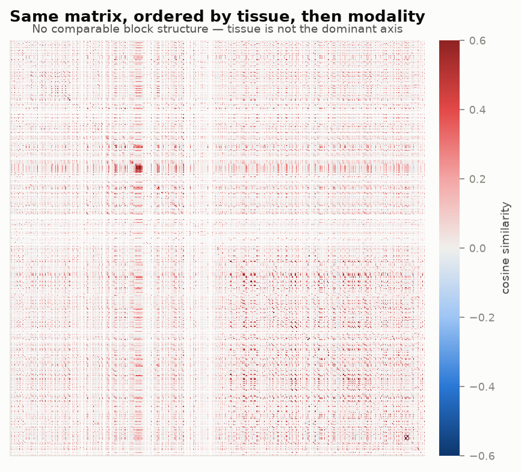
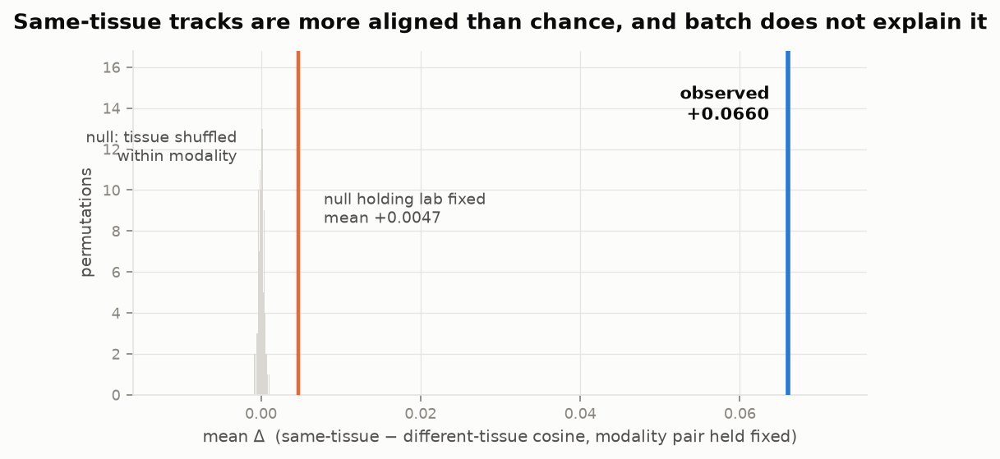
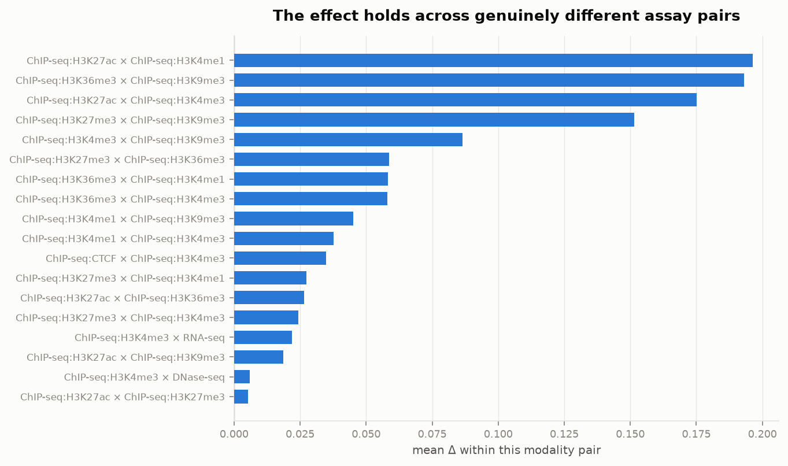

NTv3 interpretability · functional-track head
Does the track head learn biology, or just modality?
NTv3 learns one linear projection per functional track, with nothing in the parameterization tying RNA-seq tracks to each other or telling the model that a liver ATAC track and a liver RNA track share a tissue. It learns tissue structure anyway — but modality dominates, and tissue is a second-order effect that survives batch controls.
Modality probe
0.939
Balanced accuracy over 20 assay types (chance 0.05)
Tissue probe
0.311
Over 71 biosamples (chance 0.014) — 22× chance
Tissue effect
z = 199
Δ = +0.066 vs permutation null, modality held fixed
Explained by lab
7%
Batch accounts for a small fraction; z = 148 remains
The head really is that thin
Confirmed from the published source,
nucleotide_transformer_v3/heads.py:
class LinearHead(nnx.Module):
def __init__(self, embed_dim, num_labels, *, rngs):
self.layer_norm = nnx.LayerNorm(embed_dim, rngs=rngs)
self.head = nnx.Linear(in_features=embed_dim, out_features=num_labels, rngs=rngs)
def __call__(self, x):
return jax.nn.softplus(self.head(self.layer_norm(x)))
Track t's prediction is softplus(w_t · LN(x) + b_t), where
w_t is literally one column of a single weight matrix. There is no
cross-track structure of any kind — no assay embedding, no tissue factor, no shared
low-rank basis. Whatever organization exists had to be learned from the prediction
objective alone.
Two structural details that shaped the analysis. First, the head is
per-species (bigwig_head.species_heads.{i}), so human is a
standalone module — index 21, 7,362 tracks, 1,536-d in the 650M
checkpoint. That is cleaner than slicing rows out of a shared matrix, and it means
cross-species comparison would be meaningless anyway, since each species has its own
LayerNorm. Second, the head consumes the trunk embedding directly, with nothing in
between.
No model inference was needed. The analysis requires exactly four tensors, so they were
pulled out of model.safetensors by HTTP range request using the format's
header offsets — tens of MB instead of 2.6 GB, and no torch or JAX in the dependency
tree. Track identities come from config.json; modality and biosample
labels from the public ENCODE API.
A gauge freedom decides the preprocessing
Whether to mean-center the head vectors was an open question going in. The architecture
settles it. The linear sits directly on a LayerNorm, whose output
n(x) is exactly zero-mean across embed_dim by
construction. Expanding, and writing v_t := γ ⊙ w_t:
Therefore, for any constant c:
The all-ones component of v_t is a gauge freedom — it
provably cannot change any prediction. Two tracks can differ in raw cosine purely because
of a coordinate the model is indifferent to. The identifiable object is therefore
ṽ_t = center(γ ⊙ w_t), and cos(ṽ_i, ṽ_j) is the Pearson
correlation of the γ-scaled weights.
Three consequences:
- Mean-centering is mandatory, not stylistic — it removes a coordinate that cannot affect the model.
- The γ rescaling matters and is easy to miss: LayerNorm reweights every input coordinate before the dot product, so comparing raw
w_tmeasures similarity in the wrong metric. - Norms stay separate.
‖ṽ_t‖is the track's effective gain and is real information, but it is reported on its own rather than allowed to contaminate a cosine.
The argument was checked numerically rather than assumed: relative prediction drift under the gauge shift is 3.4 × 10⁻¹², so the algebra holds. But the correction turns out to be empirically modest — raw and corrected similarity matrices correlate at r = 0.969. It does not overturn any conclusion below. It reaches 48% of a vector's variance only for individual outlier tracks. Right to do; not load-bearing.
Modality owns the geometry
Rather than eyeballing whether PC1 "is" modality, the question becomes how predictable each label is. The answer to the PC1 question is no on its own terms: PC1 explains only 9.9% of variance, and the top 50 components reach just 51.6%. Modality is categorical and spread across many dimensions — which is also why removing it later is done by subtracting modality centroids, not by deleting a component.



‖ṽ‖ and the bias reaches 0.213, so the structure is genuinely directional rather than an artifact of track gain.The sharpest single number comes from nearest neighbours. Among a track's 10 nearest neighbours, 76.8% share its modality — as expected. But restrict attention to the neighbours of a different assay, and 73.8% of them share its biosample, against a 1.7% chance rate. That is a 43× enrichment, and it cannot be explained by modality clustering because it is computed only across modality boundaries.
Similarity structure, and what happens when modality is removed
The same cosine matrix, under two orderings. Reordering is a visual aid and not a test — the matrix itself is unchanged by permuting its rows, which is exactly why the formal test below permutes labels instead.


The principled way to remove modality is to subtract each modality's centroid — regressing out a categorical variable — rather than deleting PC1. Doing so makes the tissue effect stronger, which is what you would expect if tissue signal is real and partly masked by the dominant axis:
| Head vectors | Δ (tissue effect) | Cross-modality AUROC | Strata positive |
|---|---|---|---|
| As learned | +0.0660 | 0.6134 | 72.1% |
| Modality centroids removed | +0.0828 | 0.6346 | 73.7% |
The test: same tissue, different assay
The statistic holds the ordered modality pair fixed, which is what stops "RNA-seq and DNase are intrinsically more alike than RNA-seq and ChIP" from masquerading as tissue structure:
Restricting to cross-modality comparisons also eliminates the duplicate-inflation worry
structurally rather than by filtering: the _M/_P strand splits
of one experiment, and replicate runs of one assay, always share a modality, so they can
never land inside a within-tissue block.
The null permutes tissue labels within modality strata, preserving modality composition and per-modality tissue counts while destroying only tissue alignment.

| Checkpoint | Biosamples | Δ | z | AUROC | Strata + |
|---|---|---|---|---|---|
| 650M | all | +0.0660 | 199.3 | 0.613 | 72.1% |
| 650M | tissues only | +0.0436 | 107.5 | 0.575 | 68.2% |
| 100M | all | +0.0660 | 158.4 | 0.607 | 72.4% |
| 100M | tissues only | +0.0457 | 87.4 | 0.569 | 68.0% |
The effect replicates almost exactly across a 6.5× difference in model size, and survives restricting to primary tissues and cells — dropping the immortalized cell lines that supply most of ENCODE's cross-modality coverage. It is not a K562-and-HepG2 artifact.

Is it really tissue, or is it batch?
ENCODE experiments from one lab share protocols, reagents and often donors, and same-tissue tracks do cluster by lab (28.7% of same-tissue pairs share a lab, versus 14.0% of different-tissue pairs). This check found something that genuinely tempers the headline:
| Cosine predicts… | AUROC | Pairs |
|---|---|---|
| Same lab | 0.618 | all cross-modality |
| Same tissue | 0.566 | all cross-modality |
| Same tissue, cross-lab pairs only | 0.544 | 6,093,582 |
| Same tissue, same-lab pairs only | 0.588 | — |
Lab identity is encoded at least as strongly as tissue identity. That is worth knowing on its own — it says the head has absorbed batch structure — and it means any claim about tissue has to be made net of it.
So the decisive test permutes tissue labels within modality × lab strata, holding both confounds fixed and destroying only tissue assignment:
| Null construction | Null mean | Observed | z |
|---|---|---|---|
| Shuffle within modality | +0.00003 | +0.0660 | 199.3 |
| Shuffle within modality × lab | +0.00466 | +0.0660 | 147.6 |
Holding lab fixed moves the null from zero to +0.0047 — so batch accounts for about 7% of the effect — and the observed value still sits 148 standard deviations above it. The same pattern holds on the 100M checkpoint (null +0.0056, z = 123). Tissue structure is real, and it is not batch.
What this means for the critique
The architectural complaint is correct as stated: there is no inductive bias coupling tracks, and the head is a bare per-track linear projection. The empirical question was whether that absence shows up in the learned weights.
The head does spontaneously factorize tissue from assay — weakly, but robustly.
Modality organizes the space almost completely (probe 0.939, near-disjoint UMAP islands). Tissue is a genuine second-order structure layered inside it: 22× chance on a 71-way probe, a 43× enrichment among cross-modality nearest neighbours, and a same-tissue alignment effect that survives holding modality and lab fixed, replicates across model scale, holds on primary tissues with cell lines excluded, and is positive for every well-supported assay pair.
The honest framing is that the absolute effect is modest — cross-modality AUROC of 0.57–0.61, not 0.9. NTv3 has not learned a clean tissue × modality factorization. It has learned enough shared biological context to be detectable far above noise, without ever being told such a thing exists. That is a real argument that the inductive bias is missing but partially recoverable from data — which, if anything, strengthens the case that supplying it explicitly is worth trying.
What would change these numbers
- Donor was not resolved. Lab is a coarse batch proxy; residual donor confounding is not excluded. Lab alone accounts for ~7% of the effect, but donor could account for more.
- CAGE is excluded from the tissue test. FANTOM5's sample-annotation URL returns 404, so 1,276 CAGE tracks carry modality but no tissue label. Recovering those would add a genuinely distinct modality to the cross-modality comparisons.
- Coverage. Modality resolved for 94.7% of the 7,362 human tracks, biosample for 76.2%. 222
kai*tracks are of unknown provenance and unresolved throughout. - ChIP-heavy support. The best-supported modality pairs are histone-mark × histone-mark, simply because ChIP-seq contributes 3,633 tracks. The effect holds for ChIP × RNA-seq and ChIP × DNase too, but with less data behind it.
- Not validated against real data. These are weight-space statistics. Correlating head geometry against empirical track covariation from real bigwigs would test whether it reflects biology or fitting dynamics.